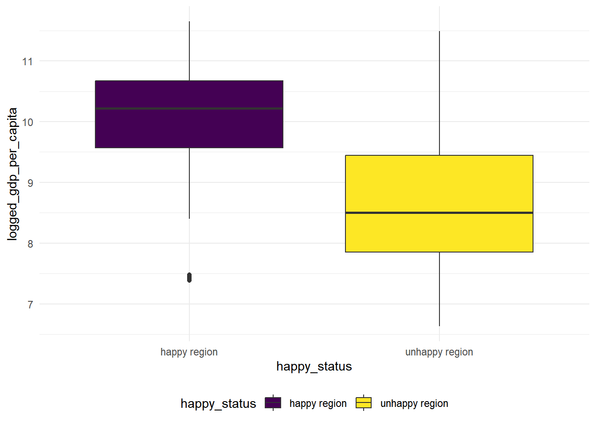
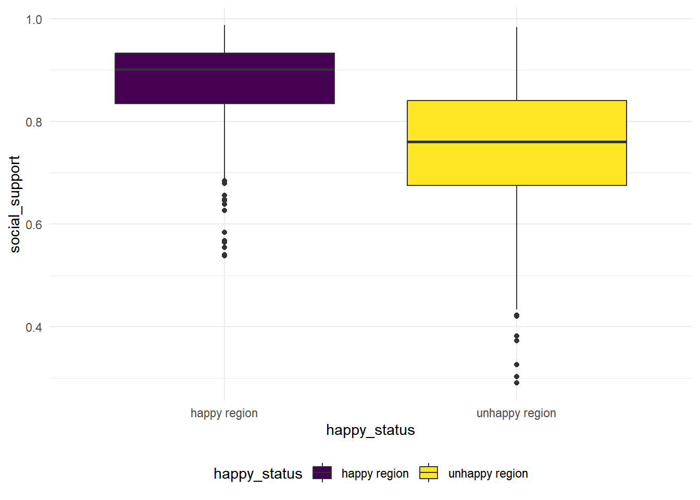
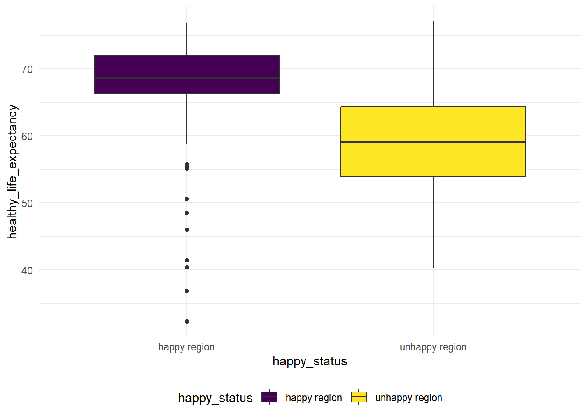
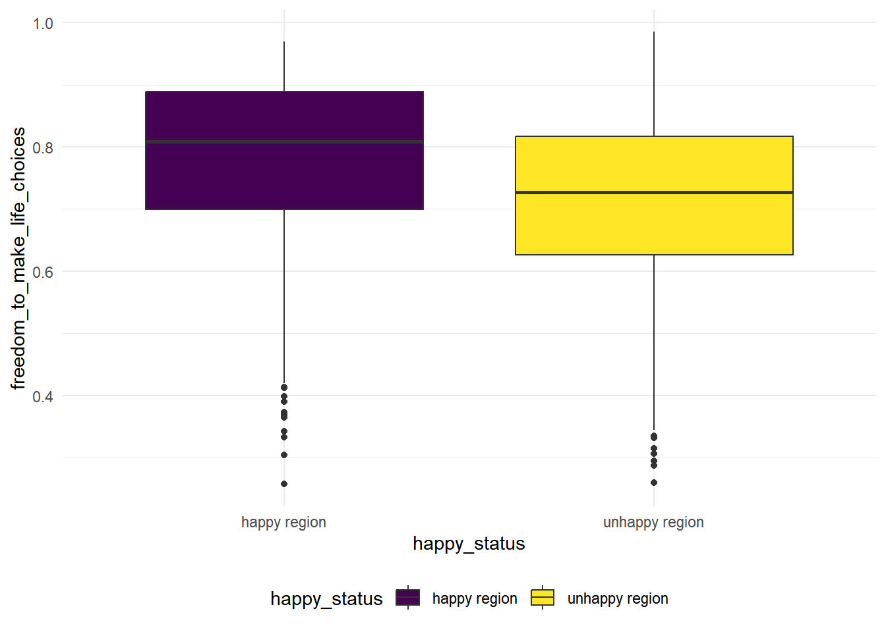
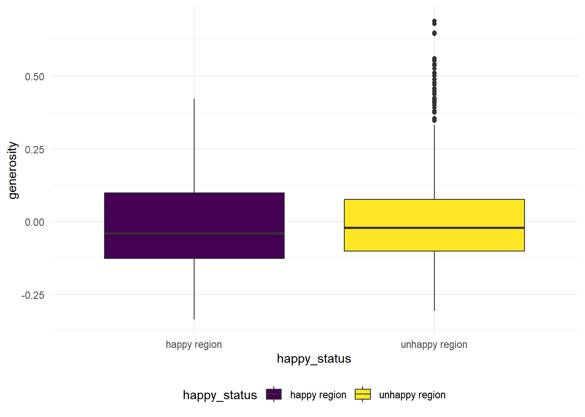
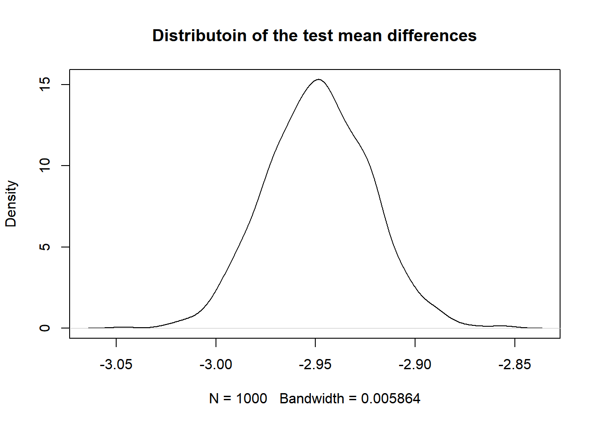

We want to try different tests in happiness scores. Let’s see whether there are some interesting findings. All the tests have a significance level of 0.05
Using ANOVA test, we can possibly compare the mean happiness scores across different regions, lets first get a sense of the ranges of the happiness scores in each region. Here we visualize the estimates and the CI bounds of the ladder score in each region to get a general sense of regional difference.
score_estimates <- function(x){
t.test(x, conf.level = 0.95) %>% broom::tidy()%>%select(estimate, conf.low, conf.high)
}
result_df <- happy_meta %>%
select(regional_indicator, ladder_score) %>%
nest_by(regional_indicator) %>%
rename(ladder_vec = data) %>%
mutate(result = map(ladder_vec, score_estimates)) %>%
select(-ladder_vec) %>%
unnest(result)
result_df %>%
ggplot(aes(x = reorder(regional_indicator, estimate), y = estimate)) +
geom_point() +
geom_errorbar(aes(ymin = conf.low, ymax = conf.high)) +
theme(axis.text.x = element_text(angle = 45, vjust = 0.5, hjust = 0.5, size = 7),
plot.title = element_text(hjust = 0.5)) +
xlab("Region") +
ylab("Estimate of Ladder Score") +
ggtitle("Estimated Ladder Scores and Their CIs for Different Regions")From the Plot, we see that ranges of the estimates of the ladder score differ a lot based on regions. Let’s see whether anova test will prove our observation.
\(H_0:\) the population mean of ladder score is the same for the all the 10 regions.
\(H_1:\) At least one population mean of the ladder score is different in all the 10 regions.
aov(ladder_score ~ factor(regional_indicator), data = happy_meta) %>% summary()## Df Sum Sq Mean Sq F value Pr(>F)
## factor(regional_indicator) 9 1447.0 160.78 337.3 <2e-16 ***
## Residuals 1806 860.9 0.48
## ---
## Signif. codes: 0 '***' 0.001 '**' 0.01 '*' 0.05 '.' 0.1 ' ' 1Since the p value in this case is very close to zero, we reject the null hypothesis and conclude that at least one population mean of the ladder score is different in all the 10 regions.
Overall in the world, whether the mean happiness score for all the
regions before covid-19 higher than the mean happiness score after
covid-19? Here we split the data in to “before covid” and “after covid”
based on variable year, and compare the mean happiness
score of these two groups using a two sample t-test.
var.test(ladder_score ~ covid_status, data = happy_meta)##
## F test to compare two variances
##
## data: ladder_score by covid_status
## F = 1.0981, num df = 1459, denom df = 355, p-value = 0.2756
## alternative hypothesis: true ratio of variances is not equal to 1
## 95 percent confidence interval:
## 0.9279279 1.2887684
## sample estimates:
## ratio of variances
## 1.098121As the p value is very big (0.2756), we fail to reject the null hypothesis and conclude that the variances of the two groups are equal in this case. So we are conducting a 2 sample t-test with equal variances in this case.
\(H_0:\) the population mean of ladder score is the same for the time period before covid-19 and the time period after covid-19 for all countries.
\(H_1:\) the population mean of ladder score is the smaller for the time period before covid-19 and the time period after covid-19 for all countries.
t.test(ladder_score ~ covid_status, alternative = "less", data = happy_meta, var.equal = TRUE) %>% broom::tidy() %>% knitr::kable(digit = 3)| estimate | estimate1 | estimate2 | statistic | p.value | parameter | conf.low | conf.high | method | alternative |
|---|---|---|---|---|---|---|---|---|---|
| -0.186 | 5.434 | 5.62 | -2.797 | 0.003 | 1814 | -Inf | -0.077 | Two Sample t-test | less |
Since the p-value is low, We found out that the happiness score after covid-19 is higher than the happiness score before covid-19. This might due to people are spending more time with their families during work from home work mode and quarantine, or other factors. If we look down on each region, will we still get the same result? Now, we compute the two tail and one tail test for data in each region.
pval_df <- tibble()
nest_conti <-
happy_meta %>%
nest_by(regional_indicator)
for(i in 1:10){
pval_df[i,1] = nest_conti[i,1] %>% pull()
p_value <- t.test(ladder_score ~ covid_status, alternative = "less", data = nest_conti[[2]][[i]], var.equal = TRUE) %>% broom::tidy() %>% pull(p.value)
pval_df[i,2] = p_value
}
pval_df %>%
rename(regional = ...1,
p_value = ...2) %>%
mutate(
test_Result = case_when(
p_value < 0.05 ~ "reject null",
p_value > 0.05 ~ "fail to reject null"
)
) %>% knitr::kable()| regional | p_value | test_Result |
|---|---|---|
| Central and Eastern Europe | 0.0000001 | reject null |
| Commonwealth of Independent States | 0.0003179 | reject null |
| East Asia | 0.1041398 | fail to reject null |
| Latin America and Caribbean | 0.5362506 | fail to reject null |
| Middle East and North Africa | 0.6747703 | fail to reject null |
| North America and ANZ | 0.9973080 | fail to reject null |
| South Asia | 0.8213778 | fail to reject null |
| Southeast Asia | 0.5272470 | fail to reject null |
| Sub-Saharan Africa | 0.0001335 | reject null |
| Western Europe | 0.1244833 | fail to reject null |
Now we see that our tests says that only in Central and Eastern Europe, Commonwealth of Independent States and Sub-Saharan Africa we reject the null hypothesis and conclude that the mean happiness score is lower for the time before covid. Lets continue looking at other regions and conduct a test where an alternative hypothesis is “the mean happiness score decreases after covid”.
pval_df2 <- tibble()
nest_conti2 <-
happy_meta %>%
nest_by(regional_indicator) %>%
filter(!regional_indicator %in% c("Central and Eastern Europe", "Commonwealth of Independent States", "Sub-Saharan Africa"))
for(i in 1:7){
pval_df2[i,1] = nest_conti2[i,1] %>% pull()
p_value <- t.test(ladder_score ~ covid_status, alternative = "greater", data = nest_conti2[[2]][[i]], var.equal = TRUE) %>% broom::tidy() %>% pull(p.value)
pval_df2[i,2] = p_value
}
pval_df2 %>%
rename(regional = ...1,
p_value = ...2) %>%
mutate(
test_Result = case_when(
p_value < 0.05 ~ "reject null",
p_value > 0.05 ~ "fail to reject null"
)
) %>% knitr::kable()| regional | p_value | test_Result |
|---|---|---|
| East Asia | 0.8958602 | fail to reject null |
| Latin America and Caribbean | 0.4637494 | fail to reject null |
| Middle East and North Africa | 0.3252297 | fail to reject null |
| North America and ANZ | 0.0026920 | reject null |
| South Asia | 0.1786222 | fail to reject null |
| Southeast Asia | 0.4727530 | fail to reject null |
| Western Europe | 0.8755167 | fail to reject null |
Now we see that only for the North America and ANZ region, the p value is low and we reject the null and conclude that the happiness score after covid is less than the happiness score before covid.
What about other continents? Is there a big difference in happiness score before and after covid? We conduct a two sided t test for those regions.
pval_df3 <- tibble()
nest_conti3 <-
happy_meta %>%
nest_by(regional_indicator) %>%
filter(!regional_indicator %in% c("Central and Eastern Europe", "Commonwealth of Independent States", "Sub-Saharan Africa","North America and ANZ"))
for(i in 1:6){
pval_df3[i,1] = nest_conti2[i,1] %>% pull()
p_value <- t.test(ladder_score ~ covid_status, alternative = "two.sided", data = nest_conti3[[2]][[i]], var.equal = TRUE) %>% broom::tidy() %>% pull(p.value)
pval_df3[i,2] = p_value
}
pval_df3 %>%
rename(regional = ...1,
p_value = ...2) %>%
mutate(
test_Result = case_when(
p_value < 0.05 ~ "reject null",
p_value > 0.05 ~ "fail to reject null"
)
) %>% knitr::kable()| regional | p_value | test_Result |
|---|---|---|
| East Asia | 0.2082797 | fail to reject null |
| Latin America and Caribbean | 0.9274987 | fail to reject null |
| Middle East and North Africa | 0.6504595 | fail to reject null |
| North America and ANZ | 0.3572444 | fail to reject null |
| South Asia | 0.9455060 | fail to reject null |
| Southeast Asia | 0.2489666 | fail to reject null |
As a result, all these left regions have a high p-value, and we fail to reject null hypothesis that “the mean happiness score before covid is the same as the mean happiness score after covid”. Thus for these regions, the happiness score didn’t change as much before and after covid.
Whether the regions that have high happiness score throughout
2008-2021 differ in properties than the countries that have relatively
low happiness score throughout 2008-2022? In this section, we divide all
the 10 regions into two group “happy regions” and “unhappy regions”
based on previous analysis on the estimates and the confidence intervals
of the ladder scores. we are going to find out whether those regions
have differences in logged_gdp_per_capita,
social_support, healthy_life_expectancy,
freedom _to_make_life_choices, and
preceptions_of_corruptions, we are going to conduct two
sample mean t.test for each of the variables.
happy_list <- c("Central and Eastern Europe", "East Asia", "Latin America and Caribbean", "Western Europe", "North America and ANZ")
unhappy_list <- c("Sub-Saharan Africa", "South Asia", "Southeast Asia", "Middle East and North Africa", "Commonwealth of Independent States")
hap_unhap <- happy_meta %>%
mutate(
happy_status = case_when(
regional_indicator %in% happy_list ~ "happy region",
regional_indicator %in% unhappy_list ~ "unhappy region"
)
)logged_gdp_per_capitaFirst we visualize the differences, looks like the logged gdp per capita for the happy countries are much higher than the unhappy ones.
hap_unhap %>%
ggplot() +
geom_boxplot(mapping = aes(x = happy_status, y = logged_gdp_per_capita, fill = happy_status)) 
Looking at the box plot, the variance is quite different for happy countries and unhappy countries, now we conduct a 2-sample t-test with unequal variances.
t.test(logged_gdp_per_capita ~ happy_status, alternative = "greater", data = hap_unhap, var.equal = FALSE) %>% broom::tidy() %>% knitr::kable(digit = 3)| estimate | estimate1 | estimate2 | statistic | p.value | parameter | conf.low | conf.high | method | alternative |
|---|---|---|---|---|---|---|---|---|---|
| 1.432 | 10.083 | 8.651 | 34.177 | 0 | 1707.127 | 1.363 | Inf | Welch Two Sample t-test | greater |
social_supporthap_unhap %>%
ggplot() +
geom_boxplot(mapping = aes(x = happy_status, y = social_support, fill = happy_status)) 
We see that the variance for these two groups are quite difference based on the boxplot, so we conduct a Two Sample t-test with unequal variances.
\(H_0:\) the population mean of social support is the same for the happy regions and the unhappy regions.
\(H_1:\) the population mean of social_support is the greater for the happy regions than the unhappy regions.
t.test(social_support ~ happy_status, alternative = "greater", data = hap_unhap, var.equal = FALSE) %>% broom::tidy() %>% knitr::kable(digit = 3)| estimate | estimate1 | estimate2 | statistic | p.value | parameter | conf.low | conf.high | method | alternative |
|---|---|---|---|---|---|---|---|---|---|
| 0.132 | 0.879 | 0.748 | 28.349 | 0 | 1528.296 | 0.124 | Inf | Welch Two Sample t-test | greater |
We see that the p.value is close to zero, there is strong statistical evidences to reject null and conclude that the population mean of social support is the greater for the happy regions than the unhappy regions.
healthy_life_expectancyhap_unhap %>%
ggplot() +
geom_boxplot(mapping = aes(x = happy_status, y = healthy_life_expectancy, fill = happy_status)) 
We see that the variance for these two groups are quite difference based on the boxplot, so we conduct a Two Sample t-test with unequal variances.
\(H_0:\) the population mean of healthy life expectancy is the same for the happy regions and the unhappy regions.
\(H_1:\) the population mean of healthy life expectancy is the greater for the happy regions than the unhappy regions.
t.test(healthy_life_expectancy ~ happy_status, alternative = "greater", data = hap_unhap, var.equal = FALSE) %>% broom::tidy() %>% knitr::kable(digit = 3)| estimate | estimate1 | estimate2 | statistic | p.value | parameter | conf.low | conf.high | method | alternative |
|---|---|---|---|---|---|---|---|---|---|
| 9.995 | 68.652 | 58.657 | 37.904 | 0 | 1563.001 | 9.561 | Inf | Welch Two Sample t-test | greater |
We see that the p.value is close to zero, there is strong statistical evidences to reject null and conclude that the population mean of healthy life expectancy index is the greater for the happy regions than the unhappy regions.
freedom_to_make_life_choiceshap_unhap %>%
ggplot() +
geom_boxplot(mapping = aes(x = happy_status, y = freedom_to_make_life_choices, fill = happy_status)) 
The variance looks similar in this case for the two group, we conduct a variance test to see whether the variances are equal
var.test(freedom_to_make_life_choices ~ happy_status, data = hap_unhap) %>% broom::tidy()## Multiple parameters; naming those columns num.df, den.df## # A tibble: 1 × 9
## estimate num.df den.df statistic p.value conf.low conf.high method alter…¹
## <dbl> <int> <int> <dbl> <dbl> <dbl> <dbl> <chr> <chr>
## 1 0.993 888 926 0.993 0.911 0.871 1.13 F test to… two.si…
## # … with abbreviated variable name ¹alternativeThe p-value is high in this case, we fail to reject the null hypothesis that two groups have the same variances. In this case, we conduct a 2 sample t-test with equal variances.
\(H_0:\) the population mean of freedom to make life choices index is the same for the happy regions and the unhappy regions.
\(H_1:\) the population mean of freedom to make life choices index is the greater for the happy regions and the unhappy regions.
t.test(freedom_to_make_life_choices ~ happy_status,alternative = "greater", data = hap_unhap, var.equal = TRUE) %>% broom::tidy() %>% knitr::kable(digit = 3)| estimate | estimate1 | estimate2 | statistic | p.value | parameter | conf.low | conf.high | method | alternative |
|---|---|---|---|---|---|---|---|---|---|
| 0.067 | 0.78 | 0.713 | 10.429 | 0 | 1814 | 0.056 | Inf | Two Sample t-test | greater |
We see that the p.value is close to zero, there is strong statistical evidences to reject null and conclude that the population mean of freedom to make life choices index is the greater for the happy regions than the unhappy regions.
generosityhap_unhap %>%
ggplot() +
geom_boxplot(mapping = aes(x = happy_status, y = generosity, fill = happy_status)) 
The variance looks similar in this case for the two group, we conduct a variance test to see whether the variances are equal
var.test(generosity ~ happy_status, data = hap_unhap)##
## F test to compare two variances
##
## data: generosity by happy_status
## F = 0.91941, num df = 888, denom df = 926, p-value = 0.2064
## alternative hypothesis: true ratio of variances is not equal to 1
## 95 percent confidence interval:
## 0.8071813 1.0474223
## sample estimates:
## ratio of variances
## 0.919406The p-value is high in this case, we fail to reject the null hypothesis that two groups have the same variances. In this case, we conduct a 2 sample t-test with equal variances.
\(H_0:\) the population mean of generosity index is the same for the happy regions and the unhappy regions.
\(H_1:\) the population mean of generosity index is different for the happy regions from the unhappy regions.
t.test(generosity ~ happy_status, data = hap_unhap, var.equal = TRUE) %>% broom::tidy() %>% knitr::kable(digit = 3)| estimate | estimate1 | estimate2 | statistic | p.value | parameter | conf.low | conf.high | method | alternative |
|---|---|---|---|---|---|---|---|---|---|
| -0.006 | -0.006 | 0 | -0.792 | 0.428 | 1814 | -0.021 | 0.009 | Two Sample t-test | two.sided |
We see that the p.value is higher than 0.05, we fail to reject null and conclude that the population mean of generosity index is the same for the happy regions than the unhappy regions.
perceptions_of_corruptionhap_unhap %>%
ggplot() +
geom_boxplot(mapping = aes(x = happy_status, y = perceptions_of_corruption, fill = happy_status)) We see that the variance for these two groups are quite difference based on the boxplot, so we conduct a Two Sample t-test with unequal variances.
\(H_0:\) the population mean of perceptions of corruption is the same for the happy regions and the unhappy regions.
\(H_1:\) the population mean of perceptions of corruption is the greater for the happy regions than the unhappy regions.
t.test(perceptions_of_corruption ~ happy_status, data = hap_unhap, var.equal = FALSE) %>% broom::tidy() %>% knitr::kable(digit = 3)| estimate | estimate1 | estimate2 | statistic | p.value | parameter | conf.low | conf.high | method | alternative |
|---|---|---|---|---|---|---|---|---|---|
| -0.062 | 0.717 | 0.779 | -7.135 | 0 | 1615.654 | -0.079 | -0.045 | Welch Two Sample t-test | two.sided |
We see that the p.value is close to zero, there is strong statistical evidences to reject null and conclude that the population mean of perceptions of corruption is the different in the happy regions than the unhappy regions.
Overall, our 2 sample t tests show strong evidences that the factors include in the data differ a lot for happy regions and unhappy regions, except for the generosity index.
Let’s found out whether the distribution of the ladder score of is different in the happy regions and the unhappy regions. In permutation test, we assign a label (“0” or “1” to the observation belong to happy region and the observation belong to unhappy region). The label itself is independent of the ladder score we are testing on, and we shuffle the labels to replicate our process of getting the test statistic. In this case, our hypothesis are:
\(H_0:\) the distribution of the ladder score is the same for the happy regions and the unhappy regions.
\(H_1:\) the distribution of the ladder score for the happy region is different from the distribution of the ladder score in the unhappy regions.
For simplicity, we choose our test statistic to be the difference of ladder score of happy regions and unhappy regions. We shuffle the label of our observation data, compute the test statistic over 1000 time and look at their distributions.
#Assign label
hap_unhap <- hap_unhap %>%
mutate(
label = case_when(
happy_status == "happy region" ~ 1,
happy_status == "unhappy region" ~ 0
)
)
#Write a function to get the test statistic
mean_diff <- function(df, label) {mean(df[label]) - mean(df[!label])}
dist.ts <- replicate(1000, {
## shuffle the labels
permuted_label <- sample(hap_unhap$label)
## compute the test statistic
mean_diff(hap_unhap$ladder_score, permuted_label)
})plot(density(dist.ts), main = "Distributoin of the test mean differences" )
Now we compute the p_value for this test. Assume that the ladder score distribution is the same for the happy region and the unhappy region, the p-value is the probablity that we observe an value on the distribution that is more extreme (smaller or bigger) than the observed mean differences in these two groups.
t_observed <- mean_diff(hap_unhap$ladder_score, hap_unhap$label)
t_observed## [1] -2.2400372 * min(mean(dist.ts <= t_observed), mean(dist.ts >= t_observed))## [1] 0The p-value is close to zero. Thus we reject the null hypothesis and conclude that the distribution of the ladder score for the happy region is different from the distribution of the ladder score in the unhappy regions.